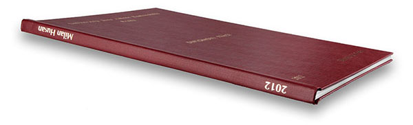
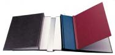
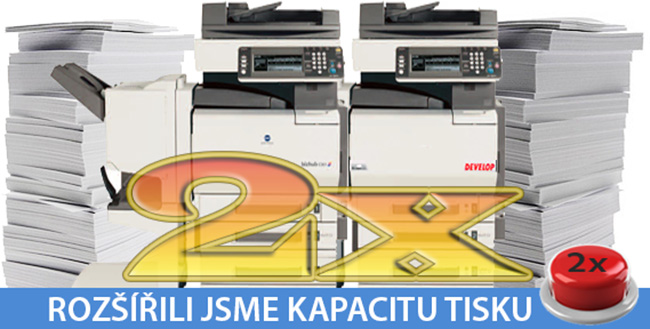

Při zadání desek předem možnost vazby na počkání. Tvrdé desky jsou potaženy vysoce kvalitním materiálem s imitací lnu. Tyto desky umožňují opětovné rozvázání a svázání práce a to nejen pro případ, že jste něco opomněli, nebo spletli.
Dostupné jsou ve třech barevných odstínech: černá, modrá a bordó

Tisk provádíme zlatým, nebo stříbrným písmem.
Desky je možno doplnit o kapsu na CD/DVD.
Tloušťka desek je 5, 10, 13, 16, 20, 24, 28, 32mm.

Spirálová vazba je nový systém kancelářské vazby dokumentů. Je kombinací kroužkové a drátové vazby, při zachování všech kladů s oběmi možnostmi spojovanými. Svázané dokumenty je možno otáčet o 360°, přičemž listy lze otáčet naprosto lehce a bez jejich poškození.
Z důvodů nízkých finančních nároků při zachování vysoké estetické úrovně je oblíbenou volbou pro vazbu vyhotovení diplomové či bakalářské práce určené pro vlastní potřebu. Spirálová vazba je vhodnou formou rovněž pro vazbu seminárních, ročníkových a podobných prací.
Počet listů není omezen, díky různým velikostem spirály. U těch nejuživanějších typů máte možnost výběru barvy spirály - bílou, průhlednou, nebo černou. Jako přední strana se používá transparentní (čirá) folie. Na zadní stranu je z důvodu zpevnění dokumentu použit bílý karton.
Ze zkušenosti sice víme, že 14 dní před odevzdáním práce, když měla být už dávno hotová, se soustředíte především na to, jak zaplnit několik bílých áčtyřek slovíčky za cenu závislosti na kofeinu a energy drincích. A tak jsme schopni tisk i vazbu vaší práce provést i za 3 dny. Samozřejmě, že nastanou i situace, kdy potřebujete prostě svázat vaši práci hned a bez řečí. I tuto expres výrobu zvládáme s přehledem. Skladem běžně držíme i několik set desek různých barev a velikostí a na Vás bude jen ozdobit je tím správným potiskem.
Termín se blíží, hodiny tikají, nervozita stoupá. A co teď? No teď je třeba už opravdu zvednout telefon, nebo potočit kolečkem na myši pod Vaší rukou a kliknout na Objednávku online. V první řadě si musíte opravdu vzpomenout na to, jakže se to vlastně jmenujete. Ano, bohužel tuto službu nenabízíme a v tomto ohledu si musíte poradit zcela sami. Jediné co Vám můžeme poradit je otevřít si Vaši práci v počítači a na prvních stranách tento údaj určitě naleznete.
Dále nás zajímá počet prací které budete chtít svázat do pevných desek. Tu pro maminku, tu pro babičku, tam tu do školy a ejhle, najednou je z toho pět kusů... No a teď to začíná být napínavé.
Termín zhotovení. Veledůležitá věc, hlavně pro nás knihaře. Standardně vyrobíme desky do 3 dnů, a nebo nebudeme spát ani jíst a zmáknem to do dvou dnů. No, ale pokud nepojedeme ani domů, tak se na desky můžete těšit už druhý den. Sice za vyšší cenu, ale zato s lepším pocitem, že i Vy jste to stihli! Spoustu starostí a taky financí můžete ušetřit, zadáte-li výrobu desek s dostatečnou časovou rezervou. Na samotné práci ještě můžete pracovat. Tisk práce se dá zrealizovat na počkání, ale výroba desek zabere dost času.
Ideální pro Vás bude, zadáte-li výrobu desek ihned po tom, kdy už víte co na ně chcete vytisknout a nerušeně pracovat na obsahu.
Pokud jste otevřeli Vaši práci, abyste zjistili to Vaše jméno, tak rovnou mrkněte, jak tlusté desky budete potřebovat neboli, kolik má to Vaše dílo stran. Velikosti jsou různé A, B, C... a to podle počtu stránek vaší práce. Vše najdete v přehledné tabulce výše. Tloušťky hřbetů jsou přepočítány na počty stran papíru o plošné hmotnosti 80g/m2. Je to standardní kancelářský papír, máte-li papír o vyšší gramáži, tak se orientujte dle tloušťky v milimetrech. V případě nejistoty při zadávání tloušťky hřbetu volte raději větší.
Nezapomeňte si také vybrat barvu desek modré, černé či bordó...
No a v neposlední řadě nás zajímá, jakou barvu preferujete pro tisk na deskách, zda zlatou, nebo stříbrnou. Jediné co neděláme, jsou voňavé desky, protože to by Vám naši knihaři mohli vazbu poslintat …
Blížíme se do finále a zbývá jen doplnit, zda-li budete chtít do desek vlepit kapsu na CD.
A pokud jste čtením našeho mini průvodce vazby nepropásli termín, zavolejte nám nebo napište a vazbu Vaší diplomové, nebo jiné práce si objednejte!
Samozřejmě neodmítneme ani přespolní studenty.